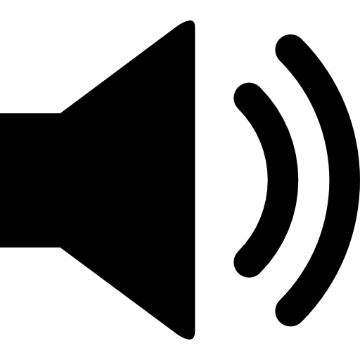

Kayllan Juan Marcilio Aki
Olá, meu nome é Kayllan! Atualmente tenho 20 anos e curso ciências da computação na UVV - Universidade de Vila Velha
Sobre mim
Sou como dizem, uma pessoa de boa confiança, que transparece para os outros alto confiança e uma percepção de alguém em que elas possam confiar! Estou sempre buscando o melhor resultado quando se trata em trabalho em equipe, motivando meus companheiros para chegarmos ao melhor resultado.
No futuro eu me vejo trabalhando para área de tecnologia - TI no geral, pretendo trabalhar para o exterior, produzindo diversos programas ou até mesmo jogos!
Curiosidades
- Costumo ouvir rock, algumas músicas como:  - "Why'd You Only Call me When you're High" - Arctic Monkeys
- Gosto de conteúdos relacionados a música ou entreterimento, como séries ou animes.
- Minha série favorita é Dexter e meu anime favorito é JJBA.
- Aprecio muito videogames também, espero um dia poder me aperfeiçoar na área por conta da programação!
üîó Acesso Rápido